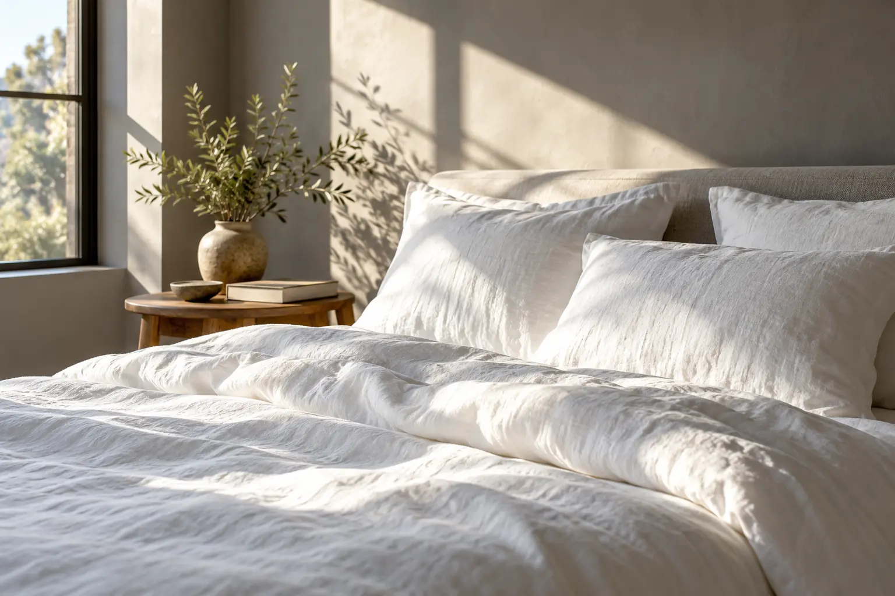

Cuida tu horario
La regularidad es parte de una buena rutina de sueño.
Una idea para empezar
Define un horario realista para acostarte y levantarte, también cuando sea posible en fines de semana.
El descanso merece su propio espacio. Organiza tu noche y construye una rutina que puedas repetir.
Planifica tu descanso
Busca horarios que puedas mantener.
Prepara un espacio tranquilo y cómodo.
Deja un momento sin pantallas antes de dormir.
Selecciona la hora de acostarte y la de levantarte. Verás el tiempo disponible entre ambas y podrás guardar tu plan.
El cálculo muestra tiempo en cama, no sueño real. Las necesidades de descanso varían con la edad y cada persona.
Los horarios se interpretan en tu hora local.
Marca los pasos que completaste. No hace falta una noche perfecta: encuentra un ritmo que funcione para ti.
0 de 4 pasos completados
La regularidad es parte de una buena rutina de sueño.
Define un horario realista para acostarte y levantarte, también cuando sea posible en fines de semana.
Un ambiente tranquilo facilita una rutina de descanso.
Ajusta la luz y el ruido de tu habitación a lo que te resulte cómodo.
La calidad del sueño importa, además de la duración.
Si las dificultades para dormir son frecuentes, consulta con un profesional de salud.